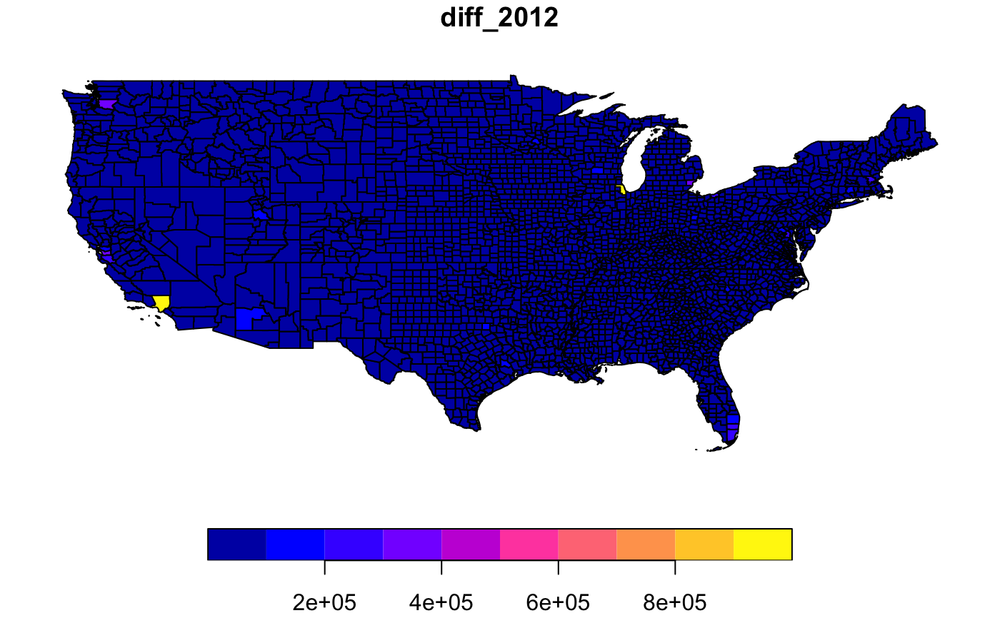

US Presidential Election results in 2012 and 2016, by county.
elections1216
An sf data frame with 3108 rows, 85 variables, and a geometry column:
Population, 2014 estimate
Population, 2010 (April 1) estimates base
Population, percent change - April 1, 2010 to July 1, 2014
Population, 2010
Persons under 5 years, percent, 2014
Persons under 18 years, percent, 2014
Persons 65 years and over, percent, 2014
Female persons, percent, 2014
White alone, percent, 2014
Black or African American alone, percent, 2014
American Indian and Alaska Native alone, percent, 2014
Asian alone, percent, 2014
Native Hawaiian and Other Pacific Islander alone, percent, 2014
Two or More Races, percent, 2014
Hispanic or Latino, percent, 2014
White alone, not Hispanic or Latino, percent, 2014
Living in same house 1 year & over, percent, 2009-2013
Foreign born persons, percent, 2009-2013
Language other than English spoken at home, pct age 5+, 2009-2013
High school graduate or higher, percent of persons age 25+, 2009-2013
Bachelor’s degree or higher, percent of persons age 25+, 2009-2013
Veterans, 2009-2013
Mean travel time to work (minutes), workers age 16+, 2009-2013
Housing units, 2014
Homeownership rate, 2009-2013
Housing units in multi-unit structures, percent, 2009-2013
Median value of owner-occupied housing units, 2009-2013
Households, 2009-2013
Persons per household, 2009-2013
Per capita money income in past 12 months (2013 dollars), 2009-2013
Median household income, 2009-2013
Persons below poverty level, percent, 2009-2013
Private nonfarm establishments, 2013
Private nonfarm employment, 2013
Private nonfarm employment, percent change, 2012-2013
Nonemployer establishments, 2013
Total number of firms, 2007
Black-owned firms, percent, 2007
American Indian- and Alaska Native-owned firms, percent, 2007
Asian-owned firms, percent, 2007
Native Hawaiian- and Other Pacific Islander-owned firms, percent, 2007
Hispanic-owned firms, percent, 2007
Women-owned firms, percent, 2007
Manufacturers shipments, 2007 ($1,000)
Merchant wholesaler sales, 2007 ($1,000)
Retail sales, 2007 ($1,000)
Retail sales per capita, 2007
Accommodation and food services sales, 2007 ($1,000)
Building permits, 2014
Land area in square miles, 2010
Population per square mile, 2010
Votes for Democratic candidate in 2016 presidential election
Votes for Republican candidate in 2016 presidential election
Total number of votes cast in 2016 presidential election
Votes for Democratic candidate as percent of total votes
Votes for Republican candidate as percent of total votes
Difference between the number of votes for Republican and Democratic candidates
The number in diff_2016 expressed as a percent of the total votes. Negative if fewer votes were cast for the Democratic candidate
Total number of votes cast in 2012 presidential election
Votes for Democratic candidate as percent of total votes
Votes for Republican candidate as percent of total votes
Votes for Democratic candidate as percent of total votes
Votes for Republican candidate as percent of total votes
Difference between the number of votes for Republican and Democratic candidates
The number in diff_2012 expressed as a percent of the total votes. Negative if fewer votes were cast for the Democratic candidate
https://github.com/tonmcg/US_County_Level_Election_Results_08-16 and https://www.kaggle.com/benhamner/2016-us-election
Sf object, unprojected. EPSG 102434: WGS84.
if (requireNamespace("sf", quietly = TRUE)) { library(sf) data(elections1216) plot(elections1216["diff_2012"]) }